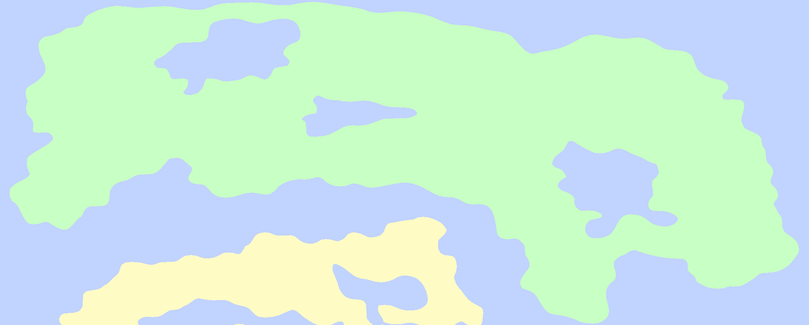
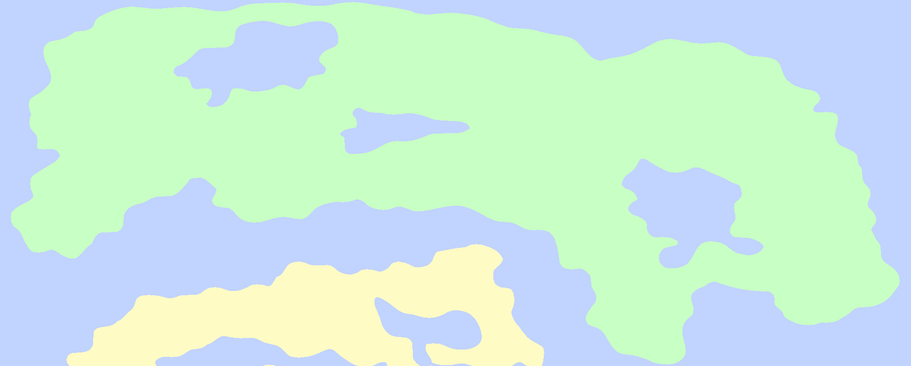

The Arisaerel
Early investigations of the Arisaerel that revealed its skull-like shape led to various superstitions to form around the island, which greatly inhibited further exploration of the region for a very long time. These superstitions contributed to the naming of the region after Arisae, a name attributed to the goddess of destruction in the old aunim religion.
Many consider the Arisaerel to be among the most dangerous regions in Karvaea, next to Calla and the Lilieaeta. Most of this danger comes from the freezing temperature, though the local fauna holds its own hostility towards intruders. Notably, the Arisaerel is the only region in the world where vampirism has not become endemic.
Close